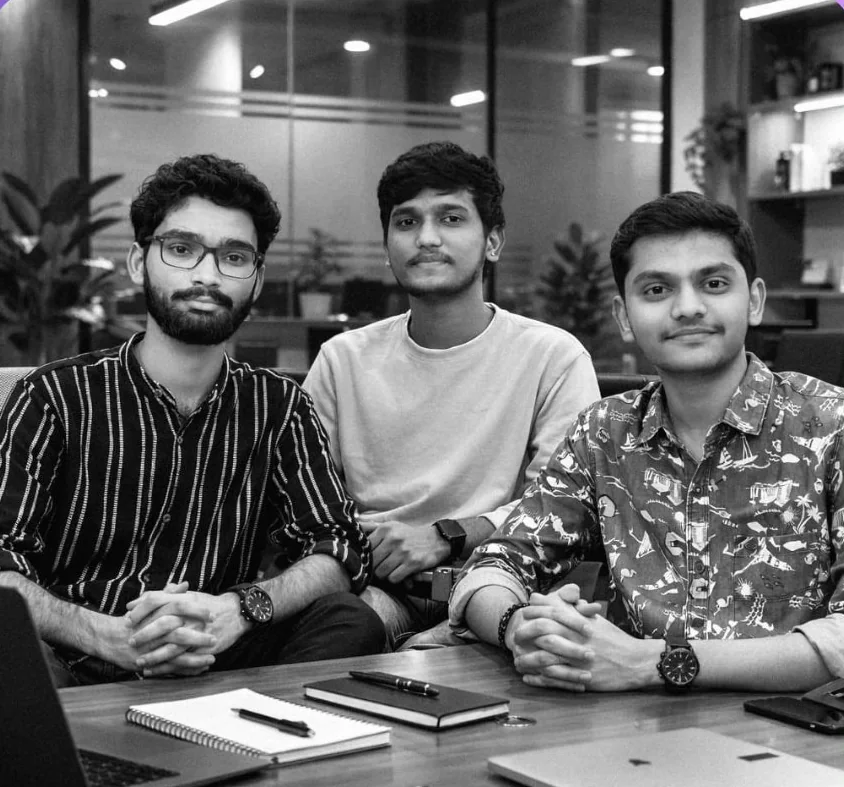

ECE — Embedded Systems — AI / ML
Khaja Baba Shaik
Research · Build · Optimize
I design the whole stack of a device — the board, the firmware and the model on top. Computer-vision and optimization systems at ITC Limited, ESP32-S3 hardware bring-up for an ISRO project at IIT Tirupati, and a breath-based silicosis screener that reached the global top 12 of Microsoft Imagine Cup.
- Microsoft Imagine Cup
- Top 12 Global semifinalist
- Samsung Solve for Tomorrow
- Top 5 National finalist
- India Skills · Robotics
- Gold Andhra Pradesh
- Vision pipeline · ITC
- 68→95% Detection accuracy
- Patents
- 2 Filed / in filing
Part I
Recognition
Built for real problems — recognised on national and global stages.


2025
India Skills · Mobile Robotics
Andhra Pradesh State Gold Medalist
Called up the day after an exam, travelled 450 km, and took gold at the state level with a mecanum-wheel mobile robot.

2025
Samsung Solve for Tomorrow
National Finalist — Top 5 teams in India

2024 — 25
Siemens Tech for Society
Winner — Siemens × NASSCOM Foundation Hackathon
2026
WorldQuant BRAIN IQC
Stage 2 Qualifier — top 20% of teams globally
“I’ve seen mine workers lose their lives to silicosis because it was detected too late. I wanted to change that.”
Part II
Experience
Shipping systems on plant floors and in research labs.
-
ITC Limited
Paperboards & Specialty Papers Division
Intern, Industry 4.0 Centre of Excellence
- Formulated and implemented a constrained optimization engine for sheeter dispatch and truck planning — automating customer-order allocation and vehicle assignment under production-capacity and equipment constraints, replacing manual planning.
- Built a computer-vision measurement pipeline for incoming wood-girth estimation, raising girth-detection accuracy from 68% to 95% and strengthening raw-material intake and procurement decisions at the Bhadrachalam mill.
- Trained NIR/SWIR spectral and optical ML models for bark classification and wood-chip brightness estimation for process control.
- Created SAFE, a secure USB transfer system for air-gapped OT plant PCs: an IT gateway scans files (Defender, ClamAV) and seals them with AES-256-GCM, Ed25519 and post-quantum ML-KEM-768, verified by Windows 7–11 agents before release.
- Designed ISR, a change-risk layer that tiers PLC and set-point changes by physical plant impact and enforces approvals — cutting dangerous changes rated low-risk from 13 to 0 on the Tennessee Eastman benchmark, with 2,950+ automated tests passing.
-
IIT Tirupati
Indian Institute of Technology Tirupati
Research Intern — ISRO RESPOND Project (₹22 Lakh)
- Built a smart wireless accelerometer and its receiver unit for real-time machine-tool vibration monitoring and analysis.
- Brought up hardware and firmware of the custom ESP32-S3 sensor PCB, validating I2C, SPI, UART and interrupt handling.
- Verified power-up and reset sequencing in 3 operating modes, sustaining 4+ hours of continuous real-time wireless operation.
Part III
Projects
From breath, to boards, to backtests.


Medical diagnostics + startup · Jul 2025 — Present
SilicoSafe
Early silicosis detection platform
A portable, non-invasive screening platform for early-stage silicosis risk in high-risk mining and construction workers — grown out of watching mine workers in my home district lose their lives to a disease caught too late.
- Processes 30+ breath VOC features with environmental exposure parameters to generate ML-based risk scores.
- End-to-end embedded + ML pipeline: multi-sensor acquisition, feature engineering and offline inference.
- Integrates worker exposure monitoring with multi-sensor breath analysis for exposure-aware respiratory risk assessment.
Watch the demo
Patent pending

Embedded systems + hardware · 2026
ANC Safety Helmet
Hybrid active noise cancellation for 100 dB(A) plant noise
An industrial safety helmet with hybrid feed-forward + adaptive feedback ANC, a built-in noise dosimeter, alarm hear-through and a seal monitor that warns when the earcup leaks.
- Designed 3 KiCad PCBs around a 4-layer STM32H743 board with a SPICE-verified low-latency analog front end and SAR ADCs.
- Implemented hybrid FxLMS in bare-metal C at 32 kHz, achieving 26–31 dB total noise reduction in simulation with fail-safe fallback.
- Firmware-in-the-loop tests match the Python reference to 0.0 dB(A); the seal monitor flagged 23/23 leaks with zero false alarms.
Personal project · 2026
Statistical Arbitrage
Signal generation & backtesting
A research pipeline for market-neutral equity strategies — the same discipline that carried me into WorldQuant BRAIN IQC Stage 2.
- Built a Python pipeline to ingest historical equity data and generate cross-sectional mean-reversion and momentum alpha signals.
- Constructed and backtested market-neutral long-short portfolios, evaluating risk-adjusted returns via Sharpe ratio and drawdown.
Also from the workbench

Self-Balancing Robot
MPU-6050 IMU, complementary filter and PID control on Arduino keep a two-wheeled robot upright.
Wireless Accelerometer Receiver
The receiver unit for the ISRO RESPOND vibration-monitoring accelerometer — real-time wireless capture from the machine floor.
Face Lock for Linux
Face-recognition authentication hooked into the Linux boot process, built with Python and OpenCV.
Invisibility Cloak
Real-time colour segmentation and background substitution — the Harry Potter trick in OpenCV.
Part IV
Patents
Ideas worth protecting.
Patent pending — 2nd filing
SilicoSafe
Breath-VOC and ML-based early silicosis screening system.
Provisional patent — filing stage
SAFE
Secure USB transfer system for air-gapped industrial OT networks.
Part V
Toolkit
Silicon to software.
AI / ML
PyTorch · Deep Learning · Computer Vision · OpenCV · ML-based Anomaly Detection · Constrained Optimization
Embedded
STM32 · ESP32-S3 · Bare-metal C · Firmware Bring-up · KiCad PCB Design · Analog Front End · SPICE · DSP · FxLMS
Computer Architecture
RISC-V ISA · x86 ISA · CPU Pipelines · Out-of-Order Execution · Performance Modeling · I2C · SPI · UART
Robotics
ROS2 · Robot Perception · Sensor Fusion · SLAM · Path Planning · Motion Planning · Robot Control
Programming
Python · C · C++ · Golang · SQL · Assembly (RISC-V)
Tools
Git · GitHub · Linux · VS Code · MATLAB · Simulink · ModelSim · Verilator · OpenSCAD · Excel · Power BI · PI Data
-
2023 — 2027
B.Tech, Electronics & Communication Engineering
Rajiv Gandhi University of Knowledge Technologies, RK Valley
CGPA 8.0 / 10
-
2023
Pre-University Course (Class XI–XII)
Rajiv Gandhi University of Knowledge Technologies, RK Valley
90%
-
2021
Secondary School Certificate (Class X)
AP Model School
87.8%
Epilogue
Let’s build something that matters
Open to research collaborations, internships and hardware + AI roles.
shaik.khajababa.00@gmail.com